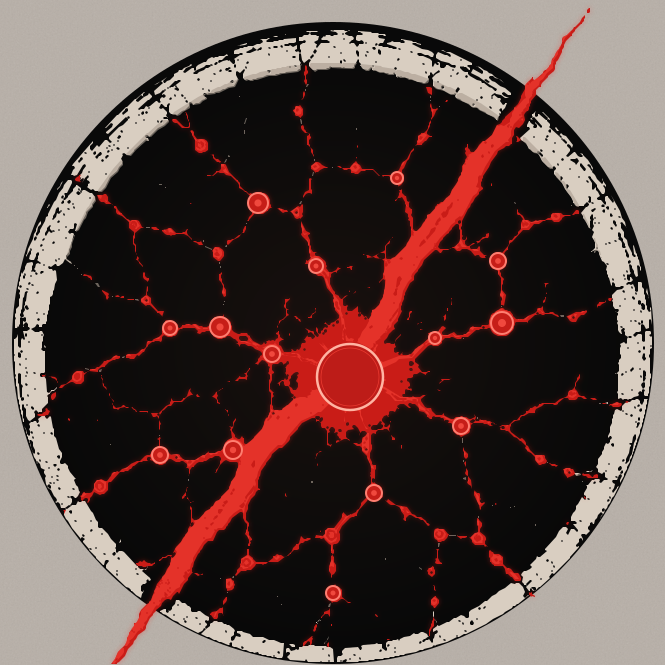
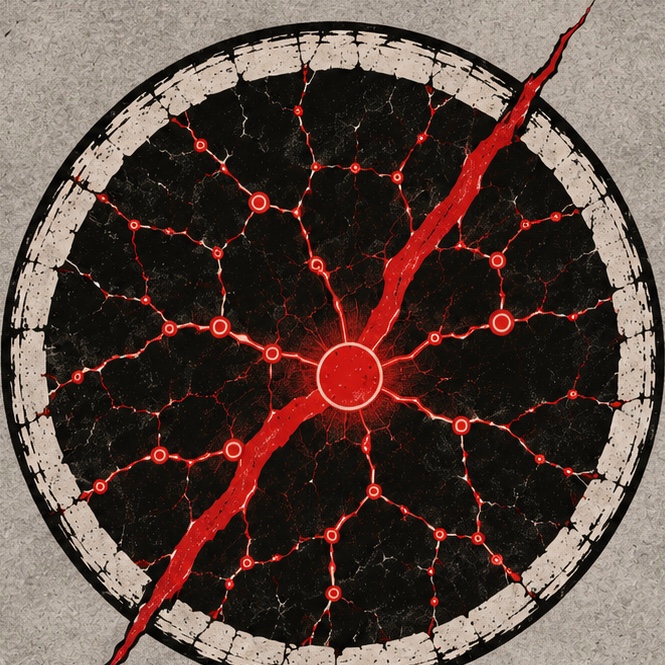

La Faille noire — SVG retenu par Zout
Octets originaux, sans modification de dessin. SHA-256 : 7bd0cfe8cf984f421b2377802ef97a0df843158217ad569ddd838313d4e73cb6
LA FAILLE NOIRE × INTERSTICE · R6 · COMPARAISON CANDIDATE
Les actifs du projet sont modifiés uniquement sur la branche R6 candidate. L'identité historique reste archivée. Aucun déploiement ni validation d'Interstice n'est présumé.
Octets originaux, sans modification de dessin. SHA-256 : 7bd0cfe8cf984f421b2377802ef97a0df843158217ad569ddd838313d4e73cb6
Base du logo précédent reprise à l'identique, nœuds de la source retracée en surcouche. Fidélité à confirmer visuellement.

Référence vectorielle de Zout, conservée sans retouche.

Ce fichier n'est pas réellement vectorisé ; conservation pour comparaison exclusivement.
Affichage à taille réelle CSS ; les microfissures peuvent disparaître, mais le sens général doit rester reconnaissable.
| Élément | État réel | Action avant fusion |
|---|---|---|
| Faille noire | Source exacte désignée par Zout, SHA contrôlé | Confirmer la mise en production avec le lot complet |
| Interstice | R6 partage la base graphique de Faille noire ; écart de densité des ramifications rouges avec la référence | Approbation de Zout sur ce rendu précis, ou correction ciblée |
| Technique | Actifs remplacés sur branche R6 uniquement ; anciens archivés | Tests sur HEAD, écran physique si disponible, rollback |
| Publication | Non autorisée | Décision distincte de Zout pour fusion et déploiement |